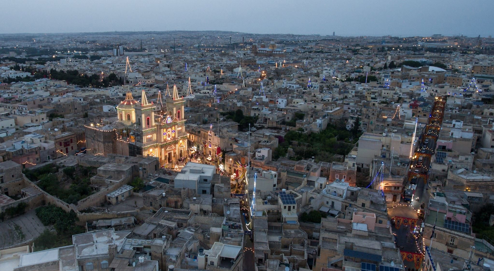
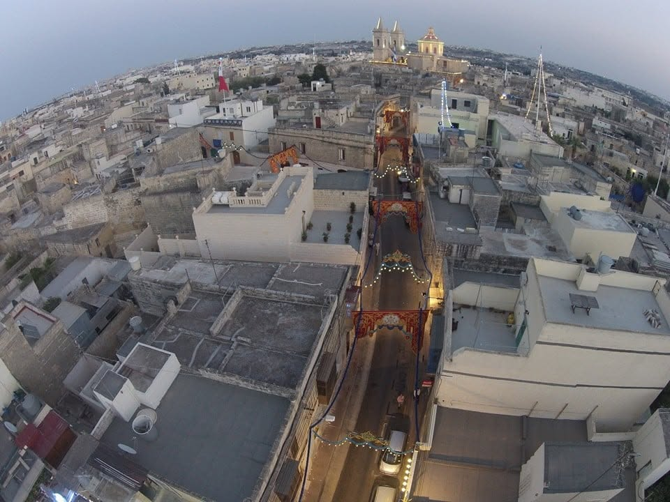
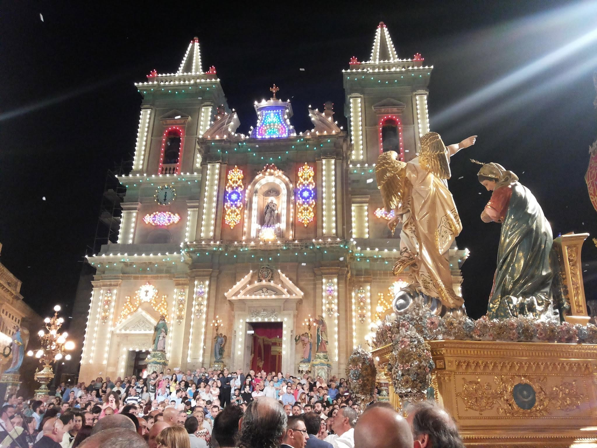
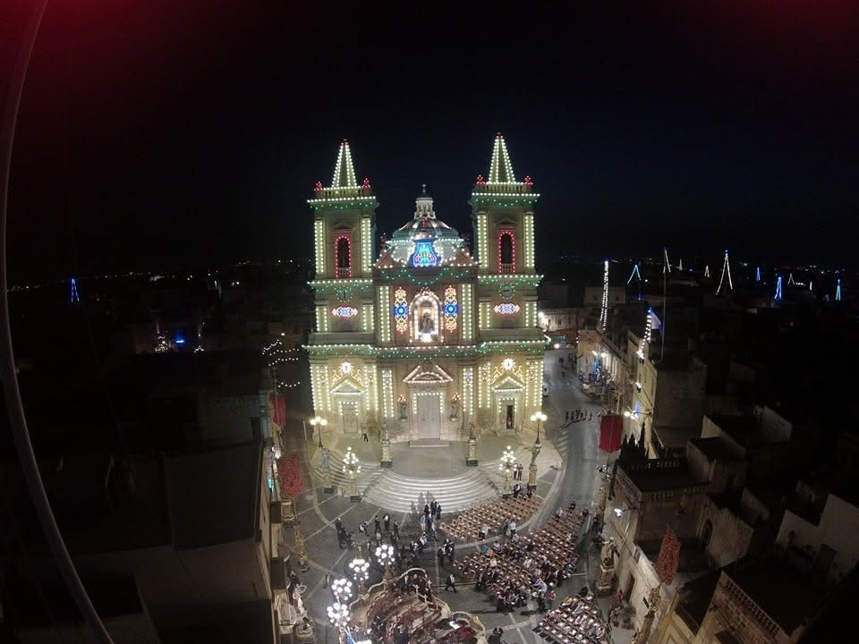
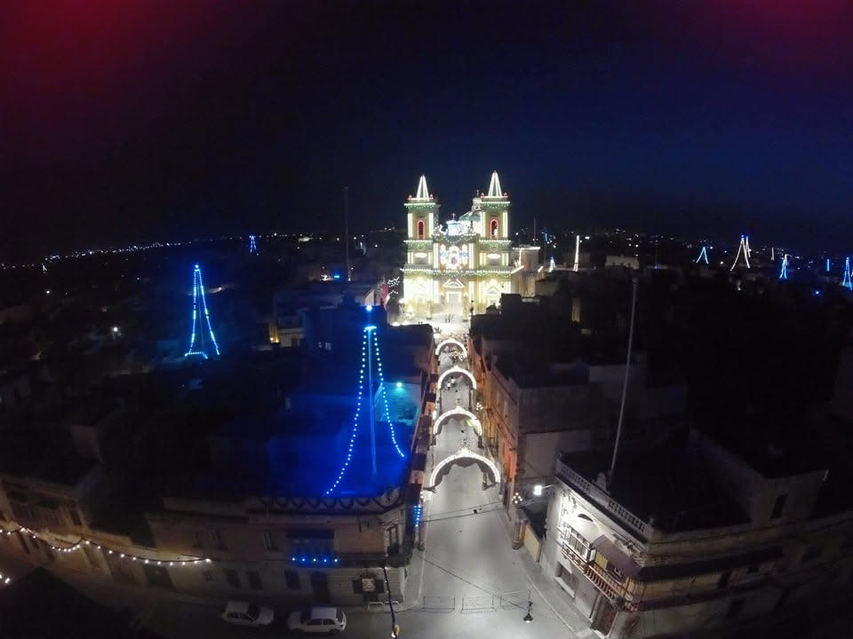
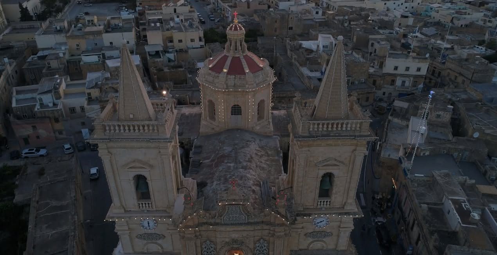
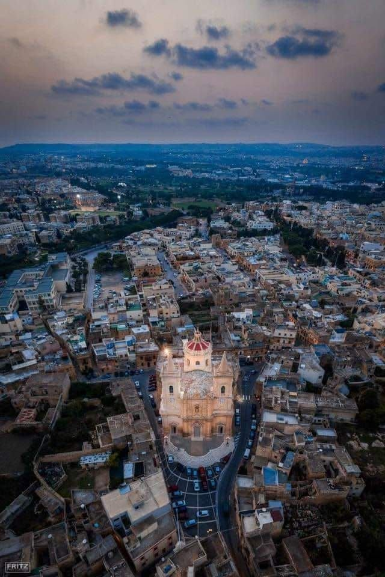
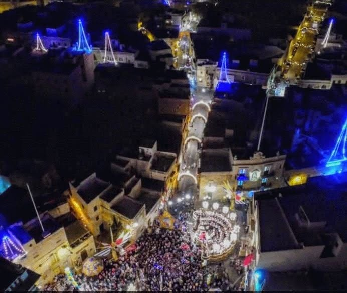

ĦAL TARXIEN · THE CHURCH
Church Photos
Views of the church, its surroundings and illuminated village streets.
9 photographs · Select a photograph to see the complete image.
← All Photo Albums















